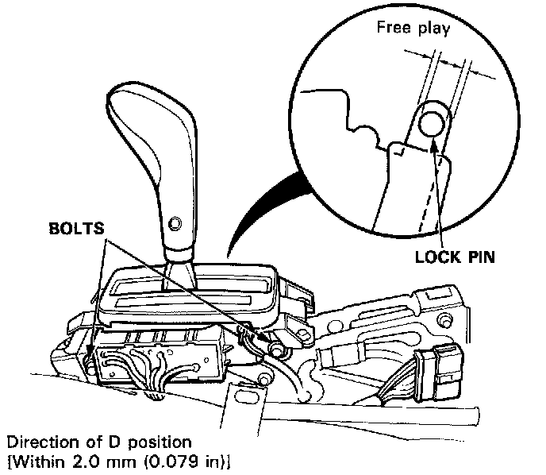

Shift Indicator - A/T: Adjustments

Shift Lever Position Indicator
Shift Position Console Switch Adjustment:
1. Shift to the 'P" position, then loosen the bolts.
2. Slide the switch in the direction of D position [within 2.0 mm (0.079 in)] so that there is continuity between No. 9 and No. 12 terminals (within the range of free play of the shift lever).
3. Recheck for continuity between each of the terminals.
NOTE:
^ If adjustment is not possible, check for damage to the shift lever detent and/or bracket. If there is no damage, replace the console switch.
^ The engine should start when the shift lever is in N position (within the range of free play).